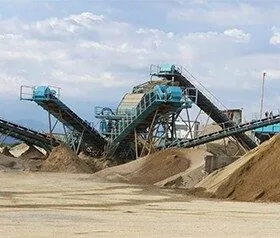
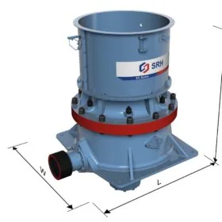
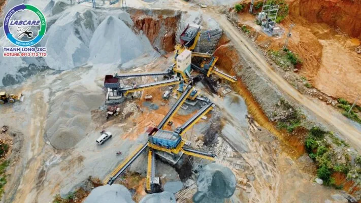

Trong xây dựng, vật liệu xây dựng là những nguyên vật liệu không thể thiếu. Tuy nhiên, để sản xuất được đá xây dựng phục vụ cho nhu cầu thì cần có thiết bị nghiền đá xây dựng. Trong lĩnh vực khai thác đá, khai thác quặng, nghiền cát thì dây chuyền máy nghiền sàng đá là phổ biến nhất. Chúng ta cùng nhau tìm hiểu về dây chuyền máy nghiền sàng đá qua bài viết này nhé.
Máy nghiền sàng đá là gì?
Máy nghiền sàng đá là tổng thể dây chuyền nghiền sàng đá trong xây dựng.
Dây chuyền máy nghiền sàng đá là một hệ thống các máy móc, vật dụng, thiết bị được xây dựng kết hợp với nhau để tạo nên một dây chuyền làm việc. Dây chuyền này có khả năng nghiền nát vật liệu đá có độ cứng để tạo thành những mảng vật liệu nhỏ hơn. Phục vụ cho việc xây dựng, cung cấp nguyên liệu cho việc sản xuất ra các sản phẩm, xây dựng công trình.

Phân loại dây chuyền máy nghiền sàng đá
Hiện nay, nhu cầu sử dụng dây chuyền để tạo ra những loại vật liệu xây ngày càng lớn. Với mỗi loại vật liệu có yêu cầu khác nhau sẽ có thiết kế dây chuyền nghiền đá khác nhau. Hiện nay, trên thị trường có 2 loại máy nghiền sàng đá chính đó là:
+ Dây chuyền nghiền đá cứng trên 1000: Dây chuyền này sẽ sử dụng máy nghiền côn. Loại này thường được ưa chuộng sử dụng tại khu vực núi đá có cường độ đá cứng cơ bản như cái tỉnh ở khu vực miền Trung và Miền Nam.

+ Dây chuyền nghiền đá có cường độ cứng dưới 1000: Dây chuyền này sẽ sử dụng máy nghiền phản kích. Loại này thường nghiền vùng núi đá vôi ở các khu vực núi đá miền Bắc. Trong một số địa bàn có tính chất đá cứng hơn thì người ta vẫn sử dụng máy nghiền côn.
Thành phần của dây chuyền máy nghiền sàng đá
Dây chuyền máy nghiền sàng đá thường được dùng để sản xuất đá, sản xuất cát, tuyển quặng,…. Thiết bị chính được sử dụng trong dây chuyền chủ yếu là máy nghiền hàm, cấp liệu rung nghiền hàm, máy nghiền thứ cấp (máy nghiền côn, máy nghiền phản kích,…), sàng rung phân loại và hệ thống băng tải.

- Cấp liệu rung nghiền hàm thường chịu trách nhiệm rung nguyên liệu, phân phối nguyên liệu trong quá trình nghiền.
- Máy nghiền hàm sơ cấp: Có nhiệm vụ nghiền nhỏ nguyên liệu để nguyên liệu có thể được di chuyển qua máy nghiền thứ cấp.
- Máy nghiền thứ cấp: Nghiền mịn nguyện liệu. Công đoạn này là công đoạn chủ yếu của toàn bộ dây chuyền máy nghiền sàng đá. Một dây chuyền có thể có một hoặc nhiều thiết bị nghiền khác nhau tuỳ thuộc vào độ cứng của đá và công suất đầu ra mong muốn của khách hàng.
- Sàng rung phân loại: là thiết bị được dùng để phân loại sản phẩm, đạt thì cho sản phẩm ra ngoài còn không đạt thì cho sản phẩm quay lại thiết bị nghiền.
- Băng tải: để dây chuyền máy nghiền sàng đá có thể hoạt động được và liên kết chặt chẽ với nhau thì không thể thiếu hệ thống băng tải. Nhiệm vụ của băng tải là vận chuyển nguyên vật liệu từ thiết bị này sang thiết bị khác cũng như ra thành phẩm.
Ưu điểm của dây chuyền
Là dây chuyền có mức độ tự động hoá cao, tỷ lệ nghiền lớn, hiệu quả sản xuất cao.
Nâng cao tuổi thọ của máy, mang lại lợi ích kinh tế cho khách hàng.
Đá thành phẩm có kích thước hạt đồng đều và hình dạng đẹp, hàm lượng kim loại thấp, không có vết nứt bên trong và chịu được áp lực cao. Đáp ứng được tối đa các yêu cầu, tiêu chuẩn của vật liệu tốc độ cao đủ tiêu chuẩn cho các ngành đường cao tốc, đường sắt, thủy lợi và trạm trộn bê tông…
Chất lượng đá tốt, tỷ lệ bột đá đầu ra thấp.
Cấu hình của dây chuyền máy nghiền đá được thiết kế theo tình hình điều tra hiện trường và yêu cầu của khách hàng.
Bảo trì, bảo dưỡng thiết bị đơn giản và dễ dàng.
Lợi ích kinh tế đầu tư cao.
Mua thiết bị dây chuyền nghiền sàng đá ở đâu?
Tại Việt Nam, các đơn vị cung cấp máy nghiền đá tương đối nhiều, tuy nhiên để lựa chọn được nhà cung cấp phù hợp với doanh nghiệp mình cần tìm hiểu và lựa chọn. Chính vì vậy, để được đi tham quan các hệ nghiền Thanh Long lắp đặt liên hệ với chúng tôi 0972 79 00 58
Tư vấn và báo giá miễn phí.